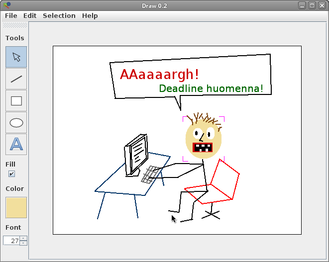

Dokumentaatio
Piirustusohjelma Draw
Alex Lagerstedt |
69482W | EST 3.vsk | 25.4.2010
Yleiskuvaus
Draw on yksinkertainen graafinen, ensisijaisesti hiirellä käytettävä ja vektoripohjainen piirustusohjelma.
Ominaisuuksia:
- Uusien eri kokoisten piirustusten luominen
- Editoitavan piirustuksen tallennus ja tallennettujen kuvien avaaminen ohjelman omaa tiedostomuotoa käyttäen
- Hiirellä piirrettäviä muotoja
- Viivat
- Ympyrät ja ellipsit
- Neliöt ja suorakulmiot
- Tekstin lisääminen piirustukseen
- Värit kaikille eri muodoille
- Muotojen täyttäminen värillä
- Yhden tai useamman muodon valitseminen
- Valittujen muotojen muokkaaminen ja liikuttaminen
- Rajaton undo ja redo-ominaisuus
- Piirustuksen vienti PNG-tiedostoksi
Ohjelma on toteutettu vaativan tasoisena ja se toteuttaa kaikki tehtävänannon vaatimukset.
Käyttöohje
Ohjelman käyttöliittymä on hyvin perinteinen ja samantapainen muiden piirustusohjelmien kanssa. Kaikkia ominaisuuksia voidaan käyttää hiirellä, ja kaikille päävalikon takaa löytyville toiminnoille on määritelty näppäimistöoikotiet.
Vasemmanpuoleisen työkalupalkin työkalut ylhäältä lukien:
- Valinta- ja siirto valitsee hiirellä klikatun muodon. Mikäli SHIFT on pohjassa, muoto lisätään aikaisempaan valintaan. Kaikkia muotoja voidaan liikuttaa raahamalla niitä hiirellä.
- Viiva piirtää uuden viivan klikkaamalla kuvasta viivan alkupistettä, pitämällä hiiren pohjassa ja raahamalla hiiren viivan lopetuspisteeseen.
- Neliö piirtää uuden nelikulmion vastaavalla tavalla kuten viivan.
- Ympyrä piirtää uuden ellipsin tai ympyrän vastaavalla tavalla kuten viivan.
- Teksti Kysyy käyttäjältä tekstin sisällön ja lisää sen valitun kokoisena kuvasta klikattuun paikkaan.
- Täyttö Muuttaa valitun muodon ja uusien muotojen täyttöasetusta.
- Väri Näyttää valitun värin. Klikkaamalla hiirellä kysyy käyttäjältä uuden värin. Muutettaessa asettaa valittujen muotojen ja uusien muotojen värin.
- Fonttikoko Asettaa lisättävien tekstielementtien fonttikoon.
Tiedostojen avaus ja tallennus sekä undo- ja redo-toiminnot löytyvät päävalikosta.
Ohjelman rakenne
Draw:n käyttöliittymä, piirustus ja piirustuksen muokkaus on pyritty erottelemaan toisistaan model-view-controller-arkkitehtuurin mukaisesti.
Luokkajako karkeasti
- Käyttöliittymä (
gui.)MainMenupäävalikkoToolBoxtyökalupalkkiDrawGUIkoostaa ohjelman graafisen käyttöliittymän- Tapahtumakuuntelijat
MenuListenerjaMouseListener
- Piirustuksen malli ja ohjauslogiikka (
logic.)Drawingkuvaa yhtä piirrustusta joka koostuu muodoistaDrawingControllerkontrolloi piirrustustaSelectionkuvaa valintaa joka sisältää eri muotojaDrawIOvastaa tiedostojen lukemisesta ja kirjoittamisesta.
- Piirustuksen sisältämät elementit (
shapes.)Shapeabstrakti pohjaluokka kaikille muodoilleFillableShapeabstrakti pohjaluokka täytettäville muodoilleCircle Line Rectangle Text
- Muokkaustapahtumat ja undo sekä redo (
actions.)UndoManagervastaa piirustukseen vaikuttavien muutosten tallentamisesta ja undo- sekä redo-toiminnallisuudestaDrawActionrajapinta, kuvaa peruutettavaa piirustuksen muokkaustapahtumaaAddAction,ColorAction,MoveAction,FillActionvastaavat kukin jotain piirustukseen vaikuttavaa toimintoa ja toteuttavatDrawAction-rajapinnan.
DrawGUI
Ohjelman käyttöliittymä. Koostuu MainMenu-päävalikosta, ToolBox-työkalupalkista ja DrawingContainer:sta joka piirtää editoitavan kuvan näytölle. DrawGUI:lla on kenttänä editoitavaa piirustusta muokkaava DrawingController.
Drawing
Kuvaa yksittäistä piirustusta. Koostuu ArrayList-objektista joka sisältää kuvan kaikki muodot niiden lisäysjärjestyksessä. Piirtäessä itsensä piirtää myös sisältämänsä muodot. Piirustuksen tapahtumia kuuntelee sille määritelty MouseListener
- getShapeAt(Point p) palauttaa pisteen p kohdalla piirustuksessa olevan päälimmäisen muodon
DrawingController
Kontrolloi piirustusta. Sisältää kenttänä muokattavan piirustuksen, UndoManagerin ja senhetkisen valinnan ja valitun työkalun Tool.
- newDrawing(Dimension d) luo uuden annetun kokoisen piirustuksen
- moveSelectedShapes(Point movement) liikuttaa valittuja muotoja haluttuun suuntaan
- colorSelectedShapes(Color c) asettaa valittujen muotojen värin
- deleteSelectedShapes() poistaa valitut muodot piirustuksesta
- ...
Shape
Kaikkien muotojen abstrakti pohjaluokka. Sisältää tiedon muodon väristä ja hiirellä piirtämisen alkupisteestä ja loppupisteestä. Tietää myös onko valittuna, ja piirtää sen mukaisesti valintaindikaattorin.
- getPosition() palauttaa muodon vasemman yläkulman sijainnin suhteessa piirustukseen
- getSize() palauttaa muodon oikean alakulman sijainnin suhteessa vasemman yläkulman sijaintiin
- abstract void drawShape(Graphics g) on ainut metodi joka perivien luokkien tulee toteuttaa. Piirtää itse muodon.
FillableShape
Abstrakti luokka joka kuvaa muotoa joka voidaan täyttää värillä. Alaluokkien tulee toteuttaa kaksi eri piirtofunktiota joita kutsutaan täyttöstatuksesta riippuen.
- abstract void drawFilled(Graphics g)
- abstract void drawNonFilled(Graphics g)
Algoritmit
Draw ei tarvitse itse toteutettuja algoritmeja juuri lainkaan. Piirustus piirretään näytölle käymällä kaikki sen sisältämät muodot läpi ja kutsumalla niiden omaa piirtofunktiota.
Tietorakenteet
Draw ei sisällä kovinkaan monimutkaisia tietorakenteita. Piirustusta kuvaava luokka Drawing ja valintaa kuvaava Selection ovat molemmat toteutettu sisäiseti Javan ArrayListinä joka sisältää eri muotoja. ArrayListiä käytetään koska sekä kuva että valinta ovat dynaamisia eikä niiden kokoa voida tietää ennalta.
Tiedostot
Draw avaa ja tallentaa tiedostot sen omasta yksinkertaisesta tiedostoformaatista.
Esimerkkitiedosto:
500,400
line;169,262;153,263;-16777216
circ;352,188;299,231;-16711834;0
rect;443,217;450,242;-13382401;1
text;81,214;228,202;-13382401;12;Tekstiä
Tiedoston ensimmäisestä rivistä ilmenee kuvan koko muodossa leveys,korkeus. Siitä eteenpäin jokaisella rivillä on kuvattu yksi Shape-objekti. Rivi on jaettu sarakkeisiin puolipisteellä.
- Objektin tyyppi.
- Muodon ensimmäinen piste muodossa
leveys,korkeus - Muodon toinen piste
- Muodon väri yhtenä neljätavuisena kokonaislukuna.
- Täyttö, mikäli muoto on täytettävä tai tekstin tapauksessa fonttikoko
- Tekstiobjektin sisältämä teksti. Ei voi sisältää puolipisteitä (korvautuvat kysymysmerkeillä.)
Testaus
Draw on niin vahvasti graafiseen käyttöliittymäänsä sidottu ohjelma että suuri osa siitä on mahdotonta testasta kunnolla ohjelmallisesti. Käytännössä kaikki virheet ovat löytyneet käyttämällä ohjelmaa.
DrawingControllerin, Drawingin ja Selectionin keskeisiä metodeja on yksikkötestattu luokassa DrawTest JUnitin avulla.
Tunnetut puutteet ja viat
- Aikasemmin piirrettyjä muotoja ei voi nostaa uudempien päälle.
- Suuremman muodon alla olevaa pienempää muotoa ei voi valita siirtämättä ensin suurempaa muotoa pienemmän päältä pois.
- Valintoja ei voi tallentaa.
- Täytettävällä muodolla ei voi samaan aikaan olla ääriviivaa ja väriä.
- Tuki läpinäkyvyydelle puuttuu.
- Jonkinlainen ohjeita ja infoa näyttävä statusbar olisi hyvä olla olemassa.
Hyvät ja huonot puolet
Hyviä puolia
- Looginen ja selkeä käyttöliittymä
- Käytetty monipuolisesti Javan rajapintaa hyväksi
- Piirustuksen, käyttöliittymän ja muokkauksen erotus. Helppo laajentaa.
Huonoja puolia
- Kankea tiedostoformaatti
- Valintoja ei voi tallentaa
- Heikko dokumentointi
Poikkeamat suunnitelmasta
Ohjelman rakenne vastaa hyvin pitkälti suunniteltua. Suurin yksittäinen poikkeama suunnitelmasta on ohjelman käyttämä tiedostomuoto. Se ei ole suunnitelman mukaisesti SVG vaan ohjelman oma yksinkertainen tekstitiedosto.
Toteutunut työjärjestys ja aikataulu
Toteutusjärjestys vastasi pitkälti suunniteltua. Karkeasti:
- Yksinkertainen testikäyttöliittymä joka piirtää näytölle jotain
- Shape abstraktina luokkana ja yksi sen perivä tai toteuttava muoto
- Drawing-luokka ja sen piirtäminen käyttöliittymään
- Shape-objektien piirtäminen piirustukseen Drawing-luokan kautta
- Työkalu jolla voi lisätä hiirellä Shape-olioita kuvaan
- MainMenu ja ToolBox eri toimintojen valintaan
- Undo ja redo-mahdollisuus kaikille kuvaan vaikuttaville toiminnoille
- Checkpoint
- Ohjelman selkeyttämiseksi erillinen DrawingController-luokka jonka kautta piirustusta muokataan
- Uuden piirustuksen luominen ja aktiivisen piirustuksen vaihtaminen
- Tekstin lisäysmahdollisuus
- FillableShape ja muotojen täyttö
- Useamman olion valitseminen ja muokkaus
- Käyttöliittymän viilausta
- Tallenus ja lataus tiedostosta
- Testausta ja hienosäätöä
Aikaa kului ennen checkpointia noin 15h ja sen jälkeen vähintään kaksinkertainen määrä. Ajankäyttö kaikenkaikkiaan 45-60h.
Arvio lopputuloksesta
Yleisesti sanottuna olen tyytyväinen lopputulokseen. Käyttöliittymä on ennen kaikkea selkeä ja helppokäyttöinen.
Luokkajako on onnistunut, tosin muutama metodi voi olla hiukan epäluontevassa paikassa. Käyttöliittymä on saatu hyvin irti piirustusta kuvaavasta mallista ja sen muokkauksesta. Ohjelmaan on helppo lisätä uusia muotoja ja toiminnallisuutta.
Yleisesti ohjelmakoodi on selkeää ja helppolukuista mutta esimerkiksi hiirtä kuuntelevassa MouseListener-luokan selkeydessä olisi paljon parannettavaa.
AWT:n ja Swingin ominaisuuksia on käytetty monipuolisesti hyväksi jolloin on vältytty monen asian itse toteuttamiselta.
Jos ohjelmaa jatketaan, seuraava ominaisuus on eri muotojen piirtojärjestyksen (kerroksen) muuttaminen ja sen jälkeen pysyvä ryhmittäminen. Seuraavat uudet muodot olisivat useammasta suorasta viivasta koostuva monimutkaisempi viiva ja kulmapisteitä klikkaamalla piirrettävä suljettu monikulmio. Tämän jälkeen tulisi toissijaisen värin valinta ja mahdollisuus muokata ääriviivaa ja täyttöä erikseen. Myös muotojen viivanpaksuuden ja tekstielementtien fonttien muuttaminen olisi helppo lisätä.
Kirjallisuusviitteet ja linkit
- Käyttöliittymä ja piirtäminen
- Yleistä
- Ohjelmoinnin jatkokurssin T-106.1240 luentokalvot
- Ohjelmoinnin jatkokurssin T-106.1240 tehtäväkierrokset
- Lukemattomat Googlen kautta löydetyt foorumit, maililistat ja nettisivut.
- Muuta
- Tango-ikonit (public domain)